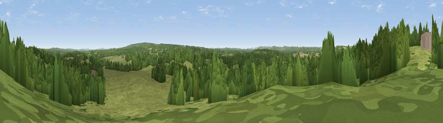

Abbotts Wood Hill
#35601 in England · top 53% of its area beats it · near DockenfieldThe view, rendered

A 360° render of this exact spot computed from the terrain model, tree cover and land cover — summer colours, afternoon light, calibrated against photographs of famous viewpoints. Real trees, hedges and buildings will differ in detail.
The panorama
Grey silhouette: terrain skyline in each direction (720 bearings, Earth curvature and refraction included). Dashed green: skyline with trees (+15 m) and buildings (+8 m) as obstacles. Blue strip: how far the ground is visible on each bearing.
Where the view opens
Wedge length = distance to the farthest visible ground on that bearing (vegetation-aware). Rings at 10, 25 and 50 km.
What fills the view
56% grassland · 41% woodland · 2% cropland · 1% built-up
Angular shares of the visible panorama (visual magnitude), not map area. Landscape diversity 0.35 (0–1 Shannon).
Key numbers
More beautiful places nearby
The staircase of upgrades: each row has a higher view potential than everything closer. Driving times are estimates from straight-line distance, calibrated against real road routing — check an actual route before setting out.
| Place | Direction | Drive | Score |
|---|---|---|---|
| Viewpoint near Kingsley | W · 3 km | ~8 min | 44.1 |
| River Hill | WNW · 4 km | ~9 min | 46.4 |
| Viewpoint near Kingsley | W · 4 km | ~9 min | 48.1 |
| Viewpoint near Crondall | NNW · 7 km | ~15 min | 51.7 |
| Wick Hill | WSW · 8 km | ~16 min | 52.4 |
| Viewpoint near Hindhead | ESE · 8 km | ~16 min | 60.4 |
| Gibbet Hill | ESE · 9 km | ~18 min | 64.9 |
| Temple of the Four Winds | ESE · 9 km | ~19 min | 66.6 |
51.15048, -0.83008 · source: osm peak · position refined by local search. Computed location — check access rights before visiting.